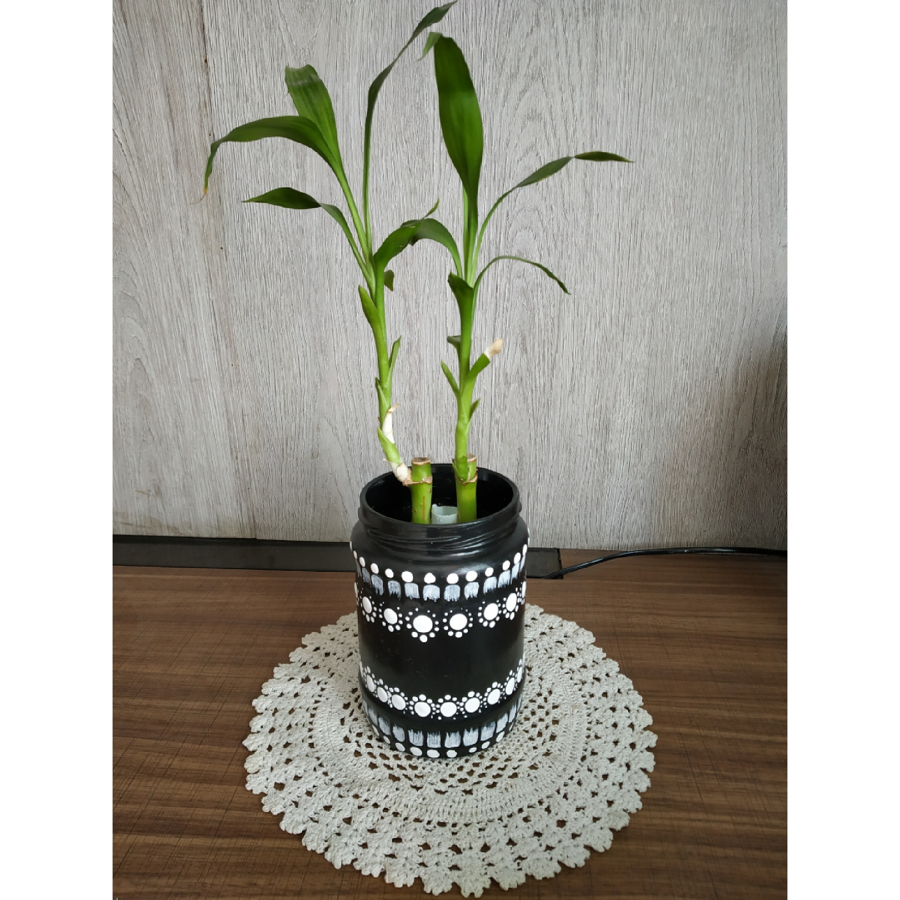

BOTTLE PAINTING
In frame is a beautiful bottle painting.
I have tried to keep it a bit simple and give a bit classy look.
Bottle painting is the best way to use a waste material.
I have basically used a sauce bottle as a pot by simply painting it and keeping a plant in it.
I feel its a best DIY craft that anyone can make
easily by painting or decorating thia so well.
I have used only two colours.
One can make it very colourful by using different colours.
One can put lights and keep instead of plant if one wants.
Materials Required :
Any bottle.
paint brush.
Black, white acrylic colour’s.
Mandala dot art tools.
steps one can follow(if needed) :
First take a plain bottle and clean properly, then paint the base of the bottle with blaclk.
Let that bottle dry well, then mark the place where and ahow you want the design.
Then start giving a little white colour on the top and bottom of the bottle as given in the above painting.
Let it dry then use the mandala tool to give the big dots(keept some distance between the dots) and let it dry well.
Then give the small dots and dry it well before using it for decoration.